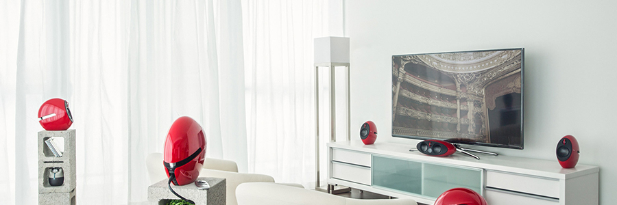
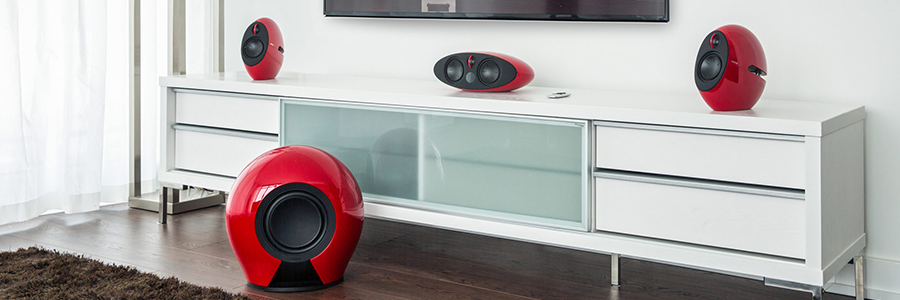
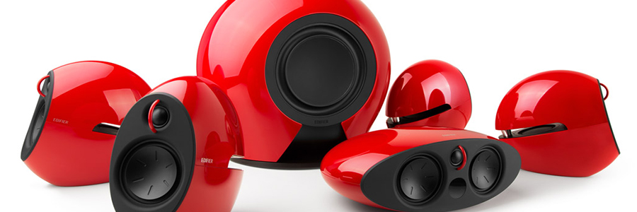

S70 Soundbar试听手记
原创2018-03-24魔方君家电魔方
作为一个投身于家电圈10年的“老编辑”，可以说是亲眼目睹着液晶电视从当初血拼等离子、 到LED背光源、再到眼下的量子点和OLED。可以说，每一次前进都是画质的再进化。But！ 在画质日臻完美的同时，似乎音质却被放在了其次的位置。
说实话，对于 Soundbar音箱，本人的初步认知还是从一些互联网电视企业启蒙的。 而正在电商平台比较多款互联网品牌、家电品牌、音频类品牌 Soundbar 时， 当得知专业的音频品牌漫步者推出了全新的S70 Soundbar之后，便第一时间下单购买下来了。
在收到这款声湃 S70 Soundbar 之后，魔方君并未着急下结论。而是试听了一段时间， 从17年12月份到今年2月份近3个月的时间里，每逢周末，都是伴随着声湃 S70 Soundbar 播放出的音乐和电影音效开启的周末模式。
尽管本君不是音箱/耳机发烧友，但引用发烧友当中“玄学党”的话来说：“我被声湃 S70 Soundbar 毒到啦！它高频解析力好，十分亮丽；低频量够、质感十足；中频虽然有些凹陷但瑕不掩瑜。 最值得称道的是声场，声音的位置、层次皆可洞悉。”
看电影—论临场感和细节的重要性2月的某个周末（记不清具体日子了）
既然选购了 Soundbar，魔方君决定先用电影把自己的耳朵唤醒。作为一款辅助产品，这是Soundbar 诞生的原因，也是他们的使命。先通过遥控器将S70调至Movie模式，因为他提供虚拟环绕声效， 这对观影的体验是十分重要的。
魔方君特意选了《勇敢的心》和《狂怒》这两部战争片，冷兵器时代和现代战争的对撞冲击、全方位 体验。不管是威廉·华莱士率领苏格兰起义军与英军的大场面拼杀，还是布拉德·皮特率领的谢尔曼 坦克车队血拼德国虎式坦克的千钧一发，声湃S70都能给你十足的临场感。
起初，我还担心它是否能音画同步，是否会有延迟，但显然是我多虑了。当前主流平板电视的屏幕 刷新率已达60Hz，而理想的声音延迟应该控制在60Hz视频画面的一帧，即17毫秒内，否则低音响 应会低于画面刷新的速度，低频会显得拖沓而松散；S70采用全新低至13毫秒延时的传输技术， 音画同步，毫不拖沓。
重甲骑士的喊杀声、反坦克炮弹飞来的轨迹、12.7mm重机枪的高射速，瞬间让你明白在战场上除了 用眼睛时刻寻找敌人，听觉也是可以救你一命的重要感观。而这一切，都是之前电视自带喇叭无法 带给我的。Oh God！我曾经，丢失了多少“细节”啊……
可以这么说，如果你一直没有接触过 Soundbar这类产品，那么毋庸置疑，声湃S70的表现会让你觉得 震撼，怎么能有这样的体验升级；如果你一直在用 Soundbar产品，那么换成声湃 S70，它的表现也 不会让你低于预期！
在观看尤其是动作、战争电影的时候，对低频的表现还是有比较高的要求，S70的这个无线低音炮 对整个低频的表现提升是毋庸置疑的，低频的震撼感、力量感的提升都十分明显，不愧是8英寸 大口径长冲程的低音单元。